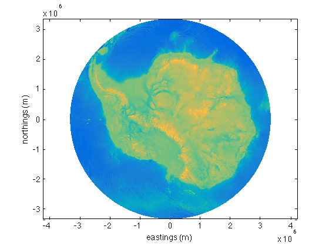
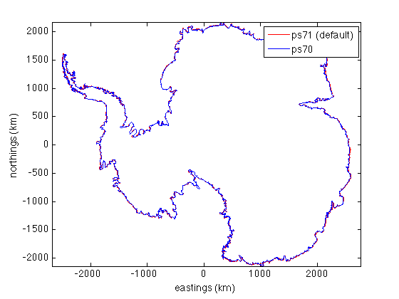
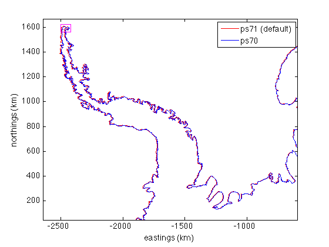
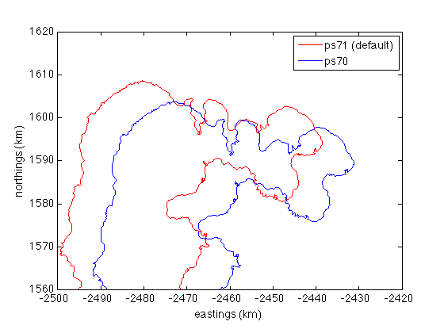

ll2ps documentation
ll2ps is part of Antarctic Mapping Tools for Matlab (Greene et al., 2017). Click here for a complete list of functions in AMT.
The ll2ps function transforms geographic (lat/lon) coordinates to polar stereographic coordinates using Snyder's formulations. ll2ps and its sister function ps2ll are adaptations of Andy Bliss' polarstereo_fwd and polarstereo_fwd functions, adapted specifically for Antarctica. These functions do NOT require Matlab's Mapping Toolbox.
Contents
Syntax
[x,y] = ll2ps(lat,lon) [x,y] = ll2ps(lat,lon,'TrueLat',ReferenceLatitude) [x,y] = ll2ps(lat,lon,'EarthRadius',RadiusInMeters) [x,y] = ll2ps(lat,lon,'Eccentricity',EarthsMisshapenness) [x,y] = ll2ps(lat,lon,'meridian',MeridianInDegrees)
Description
[x,y] = ll2ps(lat,lon) transforms georeferenced coordinates to polar stereographic x,y coordinates referenced to 71°S. Inputs lat and lon can be scalar, vecotor, or matrices of equal size.
[x,y] = ll2ps(lat,lon,'TrueLat',ReferenceLatitude) specifies a reference latitude of true scale in degrees; also known as the standard parallel. Note that although Andy Bliss' polarstereo_fwd function used -70 as a default, this function uses -71 as the default. NSIDC has been trying to standardize this, but take a close look at their reference latitudes for any data you put through this function--NSIDC sometimes uses 70°S, and sometimes uses 71°S. Again, the default in this function is -71, which matches many (not all) NSIDC Antarctic datasets as well as the Bedmap2 grid.
[x,y] = ll2ps(lat,lon,'EarthRadius',RadiusInMeters) specifies Earth's radius in meters. Default is 6378137.0 m, corresponding to WGS84.
[x,y] = ll2ps(lat,lon,'Eccentricity',EarthsMisshapenness) specifies Earth's eccentricity or misshappenness. Default values is 0.08181919.
[x,y] = ll2ps(lat,lon,'meridian',MeridianInDegrees) specifies the meridian in degrees along the positive Y axis of the map. Default value is 0.
Example 1: Gridded data
These functions were designed to make going back and forth between polar stereographic coordinates and geographic coodinates as smooth and streamlined as possible. If you have a gridded data set, say the Bedmap2 data set,
[lat,lon,bed] = bedmap2_data('bed','res','5 km');
getting that bed data into x/y coordinates is simple:
[x,y] = ll2ps(lat,lon);
Now, even if you do not have Matlab's Mapping Toolbox, you can plot the Bedmap2 data set in polar stereographic eastings and northings like this:
pcolor(x,y,bed) shading interp axis equal xlabel('eastings (m)') ylabel('northings (m)')
Example 2: Specifying Earth radius, eccentricity, etc:
This is Snyder's example. The following should return x = -1540033.6; y = -560526.4;
lat = -75; lon = 150; [x,y] = ll2ps(lat,lon,'EarthRadius',6378388,'Eccentricity',0.0819919,'meridian',-100)
x = -1.5400e+06 y = -5.6053e+05
Going back the other way, use ps2ll:
[lat,lon] = ps2ll(x,y,'EarthRadius',6378388,'Eccentricity',0.0819919,'meridian',-100)
lat = -75.0000 lon = 150.0000
Example 3: Comparison of ps70 versus ps71
For some sample data, load the ASAID grounding line:
load asaid_gl
To compare projections, convert the georeferenced grounding line to polar stereographic coordinates referenced to the default 71°S and convert again for 70°S:
[x71,y71] = ll2ps(lat,lon);
[x70,y70] = ll2ps(lat,lon,'TrueLat',-70);
When plotting, let's convert the polar stereographic meters to kilometers--that'll keep the numbers out of scientific notation:
figure plot(x71/1000,y71/1000,'r') hold on plot(x70/1000,y70/1000,'b') axis equal legend('ps71 (default)','ps70') xlabel 'eastings (km)' ylabel 'northings (km)'
As you can see, the two projections are pretty close! But you may also notice that the farther you get from the South Pole, the greater the distortion. Let's zoom in on the Antarctic Peninsula and draw a little magenta box on the tip of the peninsula to indicate where we'll zoom in further:
axis([-2644 -590 47 1667]) plot([-2500 -2420 -2420 -2500 -2500],[1560 1560 1620 1620 1560],'m-','linewidth',1)
Now zoom in to the magenta box shown above:
axis([-2500 -2420 1560 1620])
Here we see there's about a 9 kilometer georeferencing difference between ps71 projection and ps70.
Citing AMT
If this function or any other part of Antarctic Mapping Tools is useful for you, please cite the paper that describes AMT.
Greene, C. A., Gwyther, D. E., & Blankenship, D. D. Antarctic Mapping Tools for Matlab. Computers & Geosciences. 104 (2017) pp.151-157. doi:10.1016/j.cageo.2016.08.003.
Author Info
This function is a slightly adapted version of Andy Bliss' polarstereo_fwd, which can be found here.
This function was tweaked a bit by Chad A. Greene of the University of Texas at Austin's Institute for Geophysics (UTIG). Changes Chad made include removal of deg2rad and rad2deg to remove dependence on Mapping Toolbox, and a change to 71 degrees South as the reference latitude.